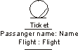
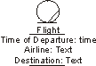
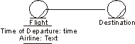

| Рекомендация: Business Entity |
 |
|
| Связанные элементы |
|---|
ExplanationBusiness entities represent "things" handled or used by the business workers as they execute a business use case. A business entity often represents something of value to several business use cases or use-case instances, so the business entity object is rather long-lived. In general, it is good if the business entity holds no information about how and by whom it is used. Typically, a business entity represents a document or an essential part of a product. Sometimes it represents something less tangible, like important knowledge about a market or a customer. Examples of business entities at the restaurant are Menu and Beverage; at the airport, Ticket and Boarding Pass are important business entities. In business modeling, we usually think of Business Entities as significant (and persistent) pieces of information, indeed that is the way we portray them in the artifact description. However, in general the "things" handled or used by business workers may be physical objects: if a business worker is realized by a complex physical system which does have material flows across its boundary, then it may be useful to have the Business Entities represent the information analogs for these physical things - they are the way the business worker communicates its actions to the rest of the business. You can then deal with the physical considerations for the business worker separately from the business modeling context - when you deal with the business worker as a system in its own right. You need to model as Business Entities only those phenomena to which other classes in the business domain model must refer. Other "things" may be modeled as attributes of the relevant classes or just described textually in these classes. AttributesAn attribute of a class represents a piece of information about an object of that class that is kept with the object. An attribute has an attribute type. Each attribute and attribute type, respectively, has a name. An object normally holds different pieces of information that describe some of its characteristics. Such pieces of information can either be described implicitly in the textual description of the object's class or modeled explicitly as an attribute of the class. An attribute is of a certain type. An attribute has a name, preferably a noun that describes the attribute's role in relation to the class. An attribute type can be more or less primitive, starting from a simple number or string. Different classes can have attributes with identical structures. Those attributes should share a description; that is, they should share attribute type. Note: You should model attributes only to make a class more understandable! Using Attributes or EntitiesNow and then it is hard to know if you should describe a concept as an attribute of a class or as a separate business entity class. The general rule is as follows: Model a phenomenon as an attribute if no more than one object needs to have direct access to it or if the only natural way to access it is through the object. Otherwise, model the concept separately, in a class of its own.  In the airport check-in use case, tickets are important. Each ticket has a passenger name and a flight. Here, the attributes Name and Flight are identified. The latter is more complex, consisting of airline, destination, time of departure, and time of arrival.
All passengers traveling on the same flight share that flight. The airline is the same for several flights. A better alternative is therefore to model flight and airline as classes. Once you have decided if a concept is so important to the use case that it must be modeled, what governs whether it should be modeled as a separate class or merely as a class attribute is not its importance in real life. Instead, what dictates how it is modeled is the business need for accessing it. This means that some concepts are modeled differently for different businesses. Consider an example: To the employees working in a traffic-planning use case at an airport, flights are central. The time of departure, the airline, and the destination must be defined for each flight. In this case, you might use a class, Flight, and give it the attributes time of departure, airline, and destination.  Flights are essential to employees working in a traffic-planning business use case at an airport. On the other hand, the situation is different for the employees of a travel agency. Although they still need time of departure, airline, and destination, they have additional needs. What is most important to a travel agency is finding a flight with a specific destination, in which case it is appropriate to create a separate class for Destination. The classes Flight and Destination must, of course, be aware of each other. A bi-directional association allows this.  Flight departures and destinations are equally essential to employees working in a travel-agency use case. Theoretically, everything can be modeled as a class. However, using attributes when appropriate reduces the number of classes that must be maintained and makes the object model easier to understand. OperationsTo perform a business worker's responsibilities, the person acting as the business worker uses one or several tools to manipulate the business entities. You can define these tools either generally or explicitly, with the help of operations and messages representing the tools used and the accesses made. An operation defines the tool with which a business entity is manipulated. The access is initiated by a message. A tool that can be used to manipulate a business entity object is represented as an operation of the business entity class, with a name and, optionally, parameters. The access of a business entity unit is shown as a message being sent to the business entity object. For example, an operation "associate baggage" on the business entity "ticket" would involve attaching baggage labels to the ticket. The parameters would include the baggage labels. Each operation is defined by a name, which should tell its purpose, and, optionally, a number of parameters. The parameters specify what an object of the class should expect to receive from an object that is requesting support or making an access, as well as what the object will provide when the operation has been performed. As an example, you can give parameters that reflect when a business worker should take a step in the worker operation, or when that business worker should access a certain business entity by initiating one of the business entity's operations. Parameters can also represent more or less tangible things that are handed over. Operations can be defined informally or in more detail, depending on the importance or required level of detail in a use case. A "more detailed" description might describe a behavior sequence that tells which attributes and relationships are dealt with during its performance, how objects of other classes are contacted, and how it is terminated. Characteristics of a Good Business Entity
Business EventsBusiness events can be used to notify interested parties (including other business entities) of a change in state of the business entity. The creation and destruction of a business entity may be significant. If you have defined a state machine, examine the states of the business entity. Each transition is a potential business event. Also inspect the attributes and operations of the business entity. Significant operations that are used infrequently may have a business event associated with them. Changes to important attributes may trigger an event. Business process patterns and business entity patterns may also provide insight into useful business events. For example, if a business entity must be approved before being used further, a <something> Approved business event may be useful to notify other parties that the business event is ready for use. For more information on finding business events, see Guideline: Business Event. |

© Copyright IBM Corp. 1987, 2006. Все права защищены.. |